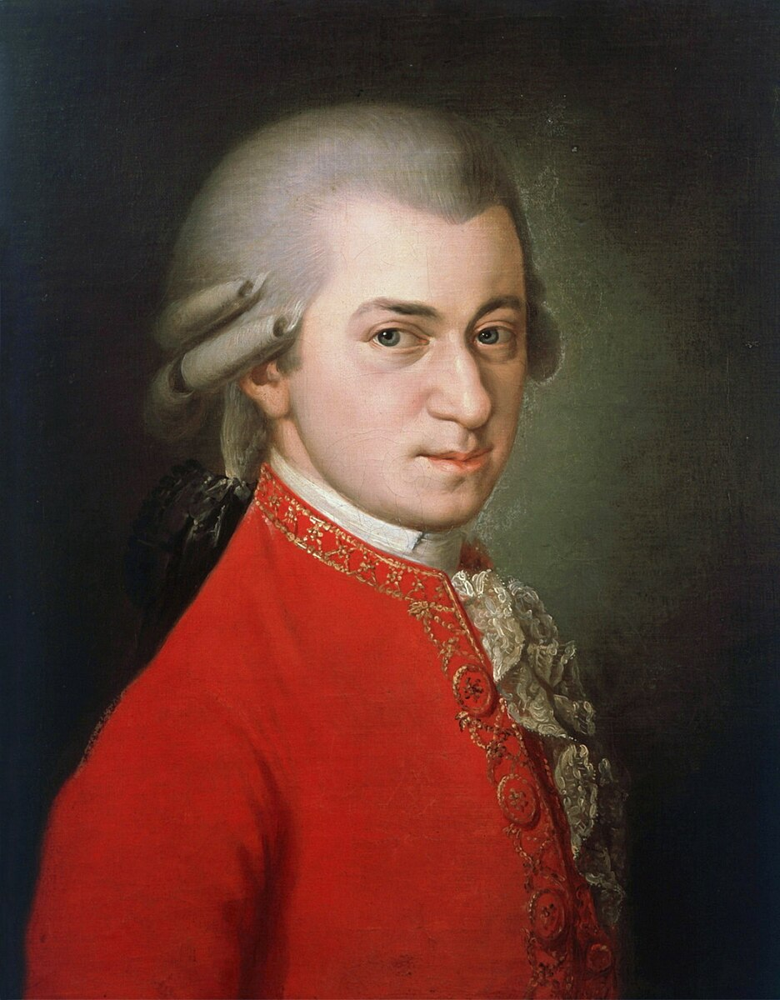
Wolfgang Amadeus Mozart
Komponist und Dirigent
Leben und Werke
1756
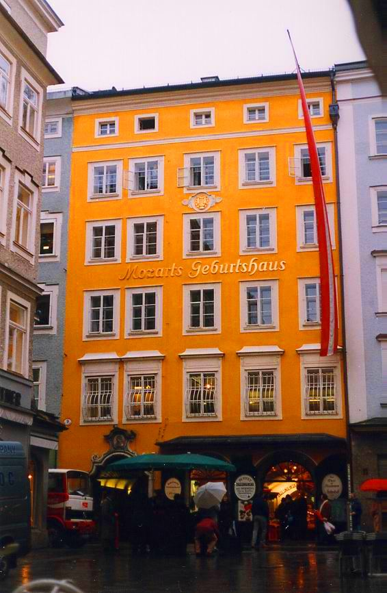
Mozarts Geburtshaus in Salzburg
Salzburg
Er war zu Eltern Leopold and Anna Maria Mozart geboren in Salzburg, Österreich
1760
 Mozarts als Kind mit seine Familie
Mozarts als Kind mit seine Familie
Mozarts als Kind mit seine Familie
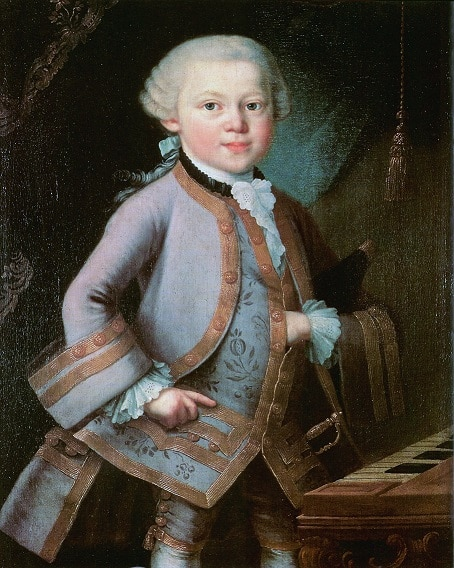
Junger Mozart
Er komponierte sein erste Musikstücke, K1 zu K5, am 4 oder 5 Jahre alt, und sein erste Symphonie am 8 jahre alt.
1770
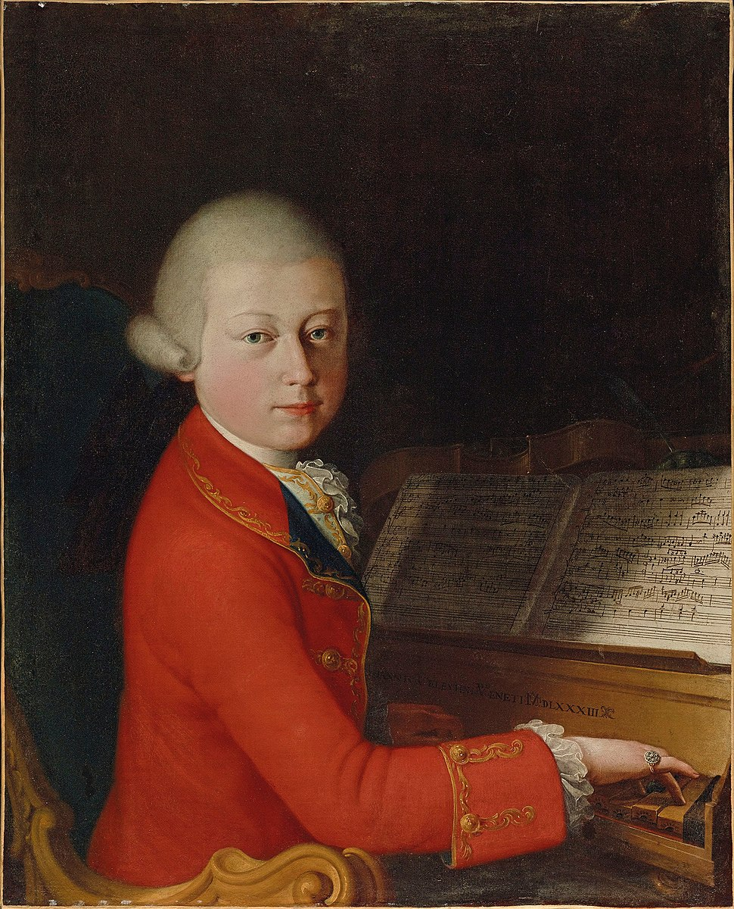
Mozart am 14 Jahre
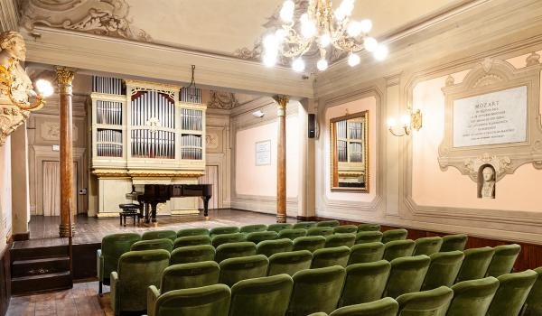
Die Academie
Am 14 jahre alt, eine Symphonie zu eingeben die Accademia Filarmonica di Bologna er gekomposiert.
1773-77
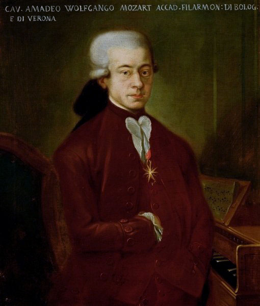
Mozart (1777)
Sein Haus bei Salzburg als Hofmusiker
In 1773 er war der Hofmusiker bei Fürsten von Salzburg angestellt und für ihn, komponierte Musik. Bis 1777 er hat viele neu Musikstücke gekomposiert, aber er war unzufrieden mit die Gehalt.
Zu finden eine Arbeit in Komposiere, er hat zu Paris gereist. Aber eine Jahre später, er hat zurück zu Österreich.
Zu finden eine Arbeit in Komposiere, er hat zu Paris gereist. Aber eine Jahre später, er hat zurück zu Österreich.
1781
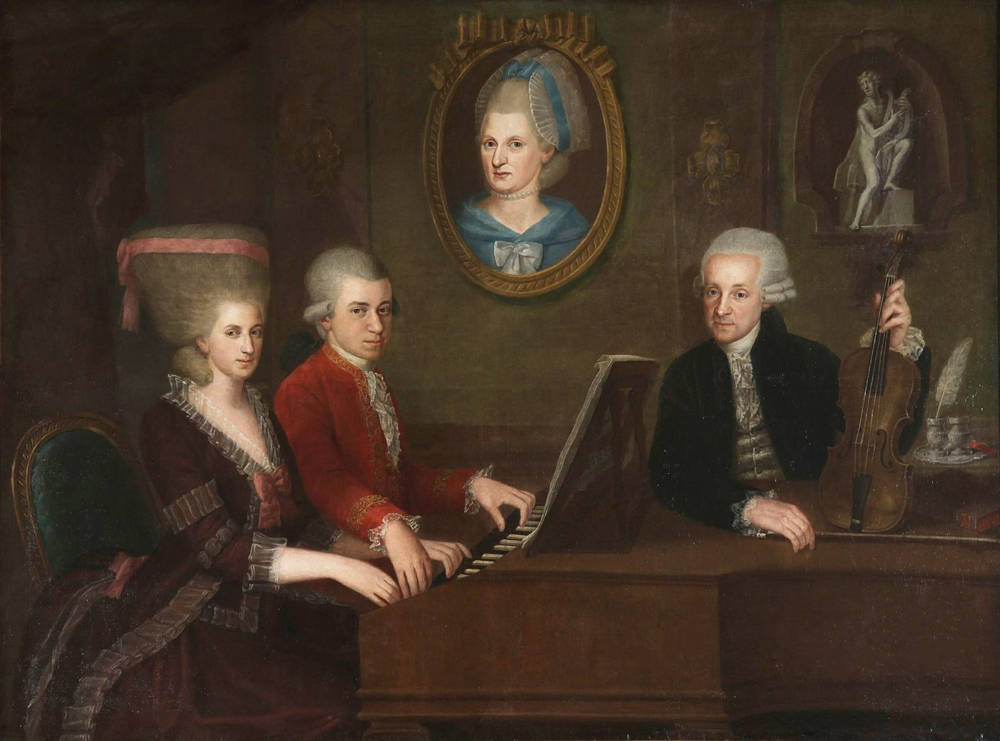
Mozart mit seine Schwester, Vater, und Mutter. (im Bild)
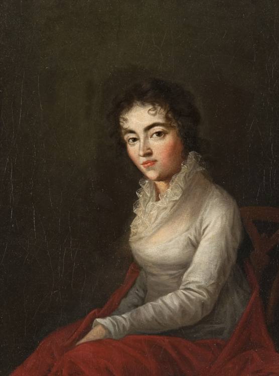
Mozarts Frau, Constanze, in 1782.
Er hat in 1781 mit der neue Österreichischer Kaiser, Joseph II, und hat Teilzeit für Ihn gekomposiert.
In April 1781, er heiratet seine Frau, Constanze.
In April 1781, er heiratet seine Frau, Constanze.
1782
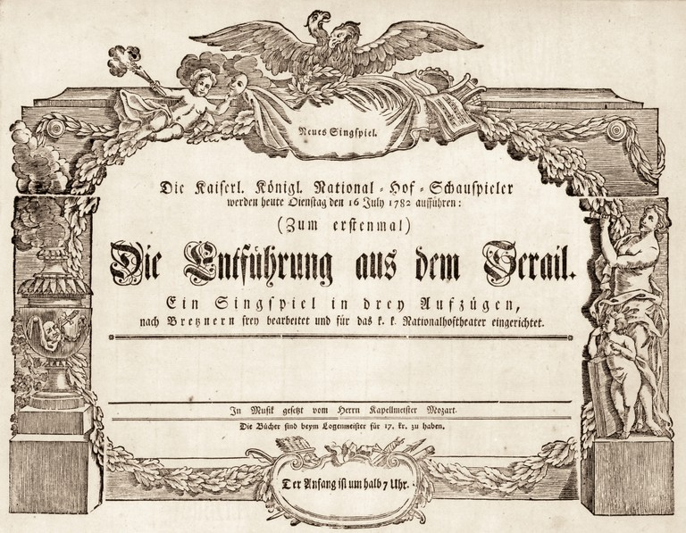
Ein Bekanntmachung für Die Entführung aus dem Serail.
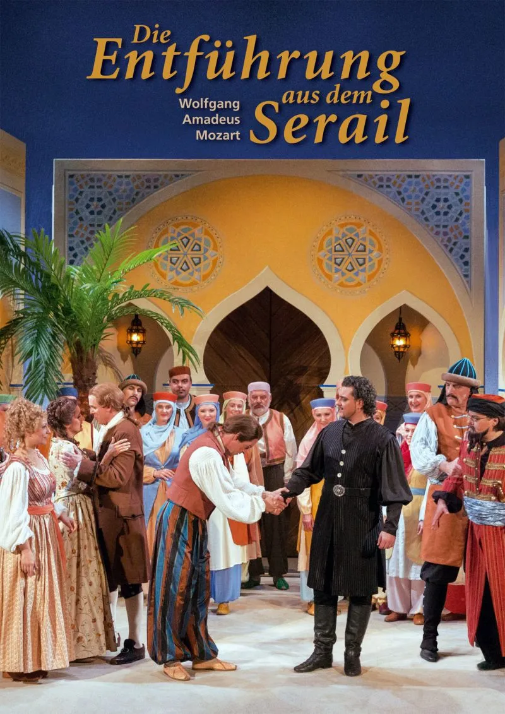
Ein moderne Bekanntmachung.
Bis 1782, er hat mehr bekannte für sein Singspiel, Die Entführung aus dem Serail, werden.
1787
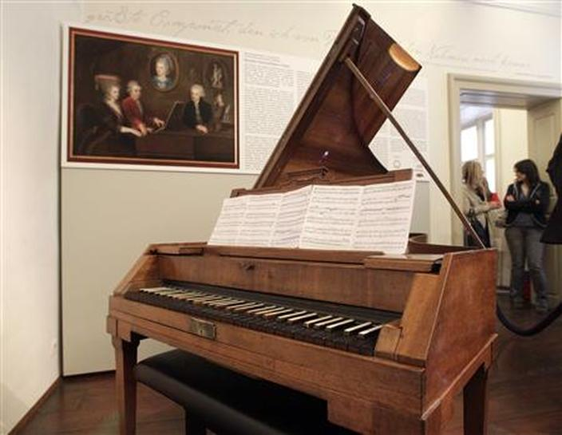
Mozarts Klavier.
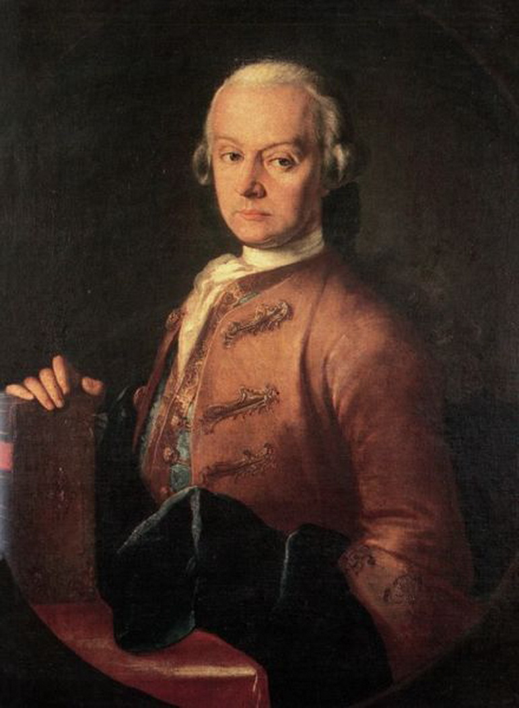
Mozarts Vater zirka 1765.
Bei 1787, er hat arbeitet als Kaiser Joseph II 'Kammerkomponist' (Chamber Composer).
Mozarts Vater starb in die selben Jahr.
Mozarts Vater starb in die selben Jahr.
1791
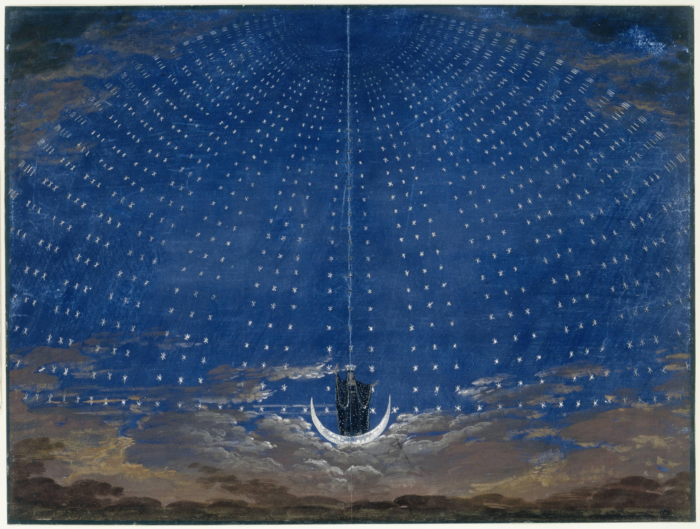
Bühne für Die Zauberflöte.
Mozart Bild nach seinem Tod.
Bis 1791, er hat kleine Geld, aber er hat in diese Zeit sein meisten berühmte Kompositione gekomposiert. Zum beispiel: Die Zauberflöte.
Im Dezember 1791, er war starb am 35 Jahre alt. Keine Todesursache (cause of death) war gefinden, anders als eine unbekannt Krankheit.
Im Dezember 1791, er war starb am 35 Jahre alt. Keine Todesursache (cause of death) war gefinden, anders als eine unbekannt Krankheit.
Eine Kleine Nachtmusik (1787)
The Marriage of Figaro (1786)
Lacrimosa - Requiem in D Minor (1791)
Das Ende